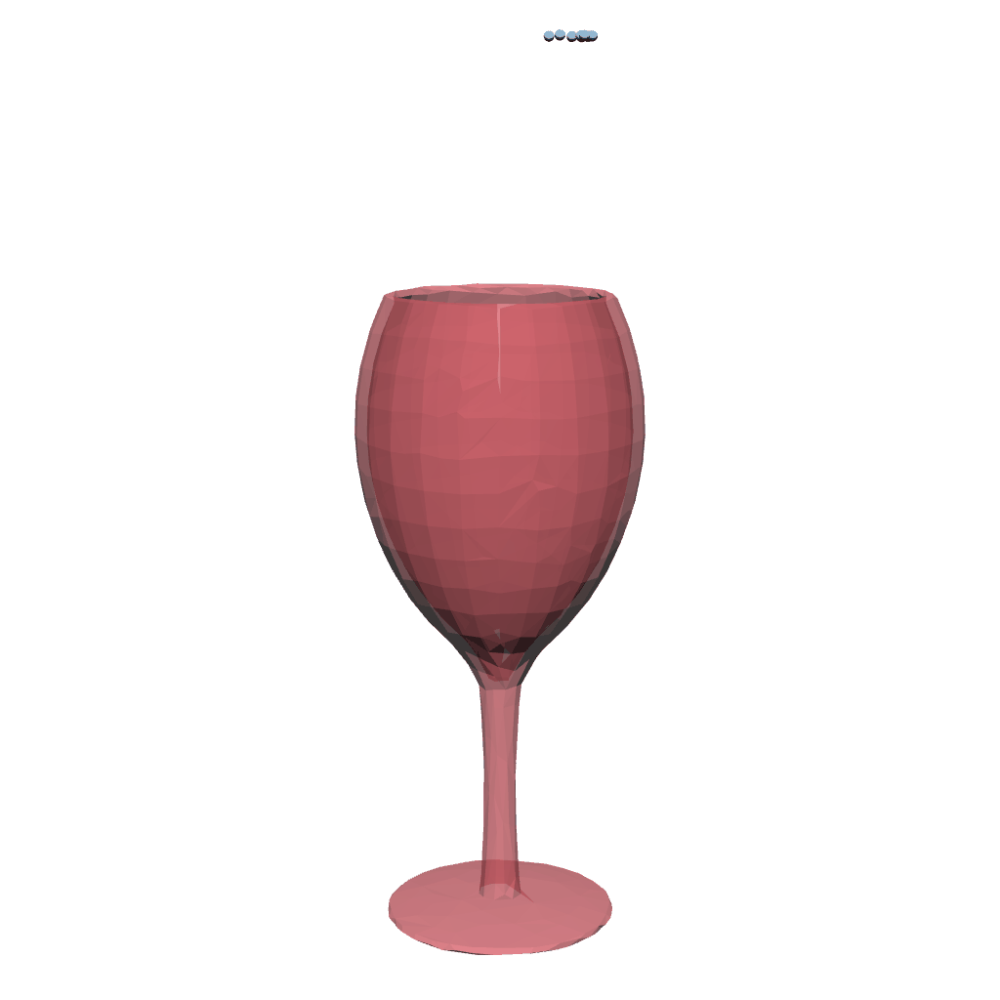
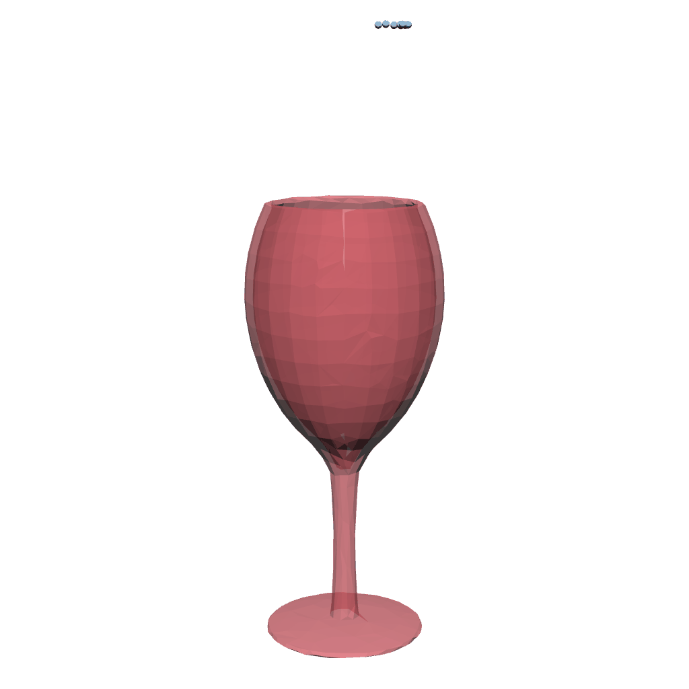

Contact Model
To alleviate penetration, we introduce a novel method called forecast-based contact model to manage the boundary conditions for Material Point Method (MPM). Specifically, the model takes a grid-to-particle transfer to look ahead in the grid operation stage, imposes constraints on particles within the contact region, and then adjusts the grid velocity accordingly.
Forecast-based contact model requires signed distance fields (SDFs) to penalize
penetration. While the definition of SDF is straightforward
for volumetric objects, it is hard to determine the sign on
nonvolumetric meshes. To solve the problem, we propose a
penetration tracing algorithm that capitalizes on the localized
motion of particles to reconstruct the SDF within confined
zones. In this way, the contact model can be applied to both
soft-rigid and soft-cloth coupling.
 
